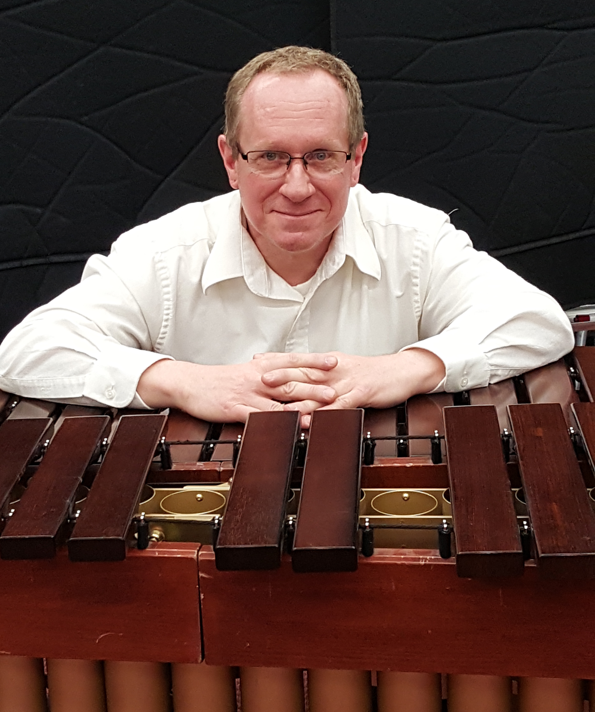
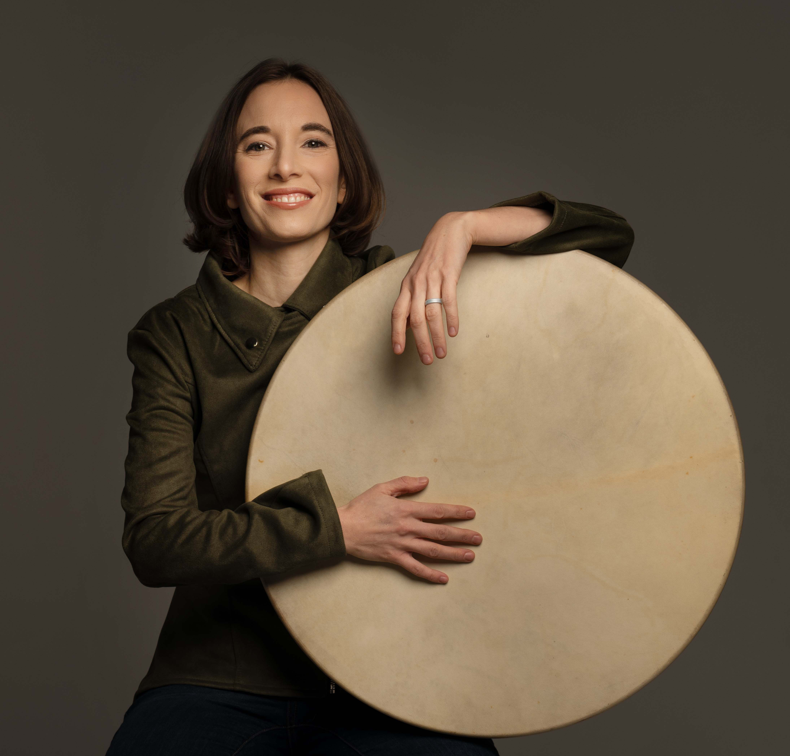
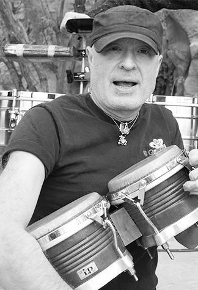

ABOUT
We make thinking percussionists.
It sounds simple... if you know how.
for complete program information, visit our help site linked by the big red button above.
How we got here.
In 1989, Dr. Dean Gronemeier began developing one of the most prolific and well-known percussion programs on the West Coast and the United States. Over the last 35 years, UNLV Percussion has produced over 15 collegiate professors, one rockstar by the name of Ronnie Vannucci Jr. of The Killers, numerous Drum and Bugle Corps greats, Blue Man Group and Cirque Du Soleil musicians, and a myriad of other successful percussionists enjoying exceptionally fulfilling performance and professional careers.
Today, UNLV Percussion has grown to serve over 20 percussionists each academic year. Coordinated by Dr. Kyle Bissantz, UNLV Percussion boasts a strong team of educators, including Dr. Dean Gronemeier, Dr. Alex Stopa, Dr. Ryan Bond, Dr. Timothy Jones and the renowned author and pedagogue, Professor Emeritus of Music, Gary D. Cook.
Current Faculty


Retired Faculty
Faculty in Memoriam

Day-to-Day
Percussion majors participate in private lessons, world percussion classes, various ensembles including Brazilian Ensemble, Marimba Band, Steel Band, and Percussion Ensemble, large department ensembles including Wind Orchestra, Symphony Orchestra, Jazz Band, NEXTET, Marching Band, and the UNLV Opera Theatre.
All percussion majors perform as soloists each semester and present recitals that directly apply to their degree programs. Intense pedagogy sessions, graduate-level literature, and percussion history courses provide a strong foundation for future educators. Additionally, DMA candidates take three semesters of writing courses explicitly geared toward article and journal writing.
Our ensembles tour and perform public engagements regularly; we are involved in the corporate performances scene in Las Vegas and engage in various recording projects.
UNLV Percussion is an exciting program where percussionists excel and reach their musical goals!
Our Ensembles
Our Philosophy & Concepts
The UNLV Percussion Area and its faculty have a primary focus of creating “thinking percussionists.” While simple, UNLV Percussion has cultivated this concept for the last three decades to yield a truly remarkable outcome for its students.
Experiential learning through awareness and critical assessment of music's technical, mental, and emotional challenges is at our pedagogy's core. With an emphasis on a demanding psychological approach to playing and teaching, percussion students develop a heightened understanding of the simple yet profound concept of “what is.”
Our percussionists are encouraged to develop their voice and identity behind their instruments. We cultivate this identity through consistent exposure to historically and culturally informed perspectives from our faculty, Artists in Residence, and a vast array of performance opportunities.
We are grateful for your interest in our program and family of percussionists if you have reached this point. Whether you are a prospective student, Las Vegas community member, or professional interested in our institution, we hope you are inspired to connect with us.